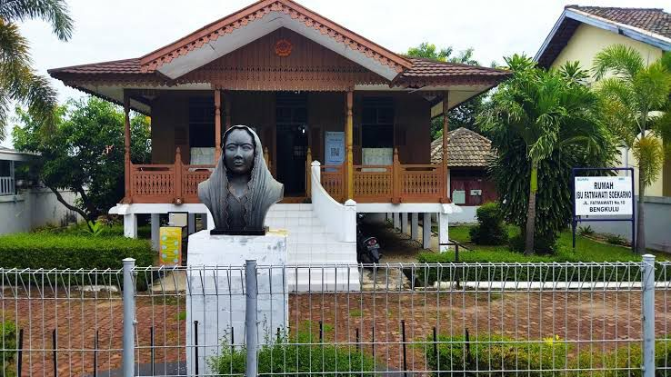

| PANTAI PANJANG | BENTENG MALBOROUGH | RUMAH IBU FATMAWATI | HUTAN MANGROVE |
RUMAH IBU FATMAWATI |
|||
|  | |||
| Rumah Fatmawati adalah salah satu tempat bersejarah yang berada di Bengkulu, tepatnya berada di Jalan Fatmawati, Kelurahan Penurunan, Kecamatan Ratu Samban.Rumah Fatmawati menerapkan tipologi rumah adat Bumbungan Lima, sehingga arsitektur ini tersusun dengan cara mengekspresikan harmoni dari seluruh aspek rumah adat Bumbungan Lima. Selain penerapan tipologi rumah Bumbunga Lima, rumah Fatmawati mempunyai keunikan ornamen yang mempunyai motif yang berbeda jenisnya. | |||